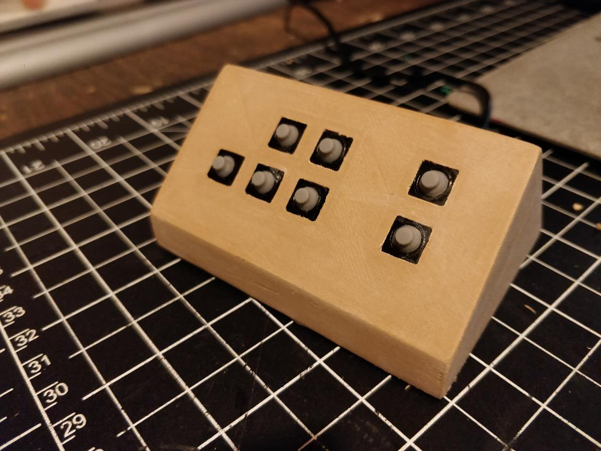
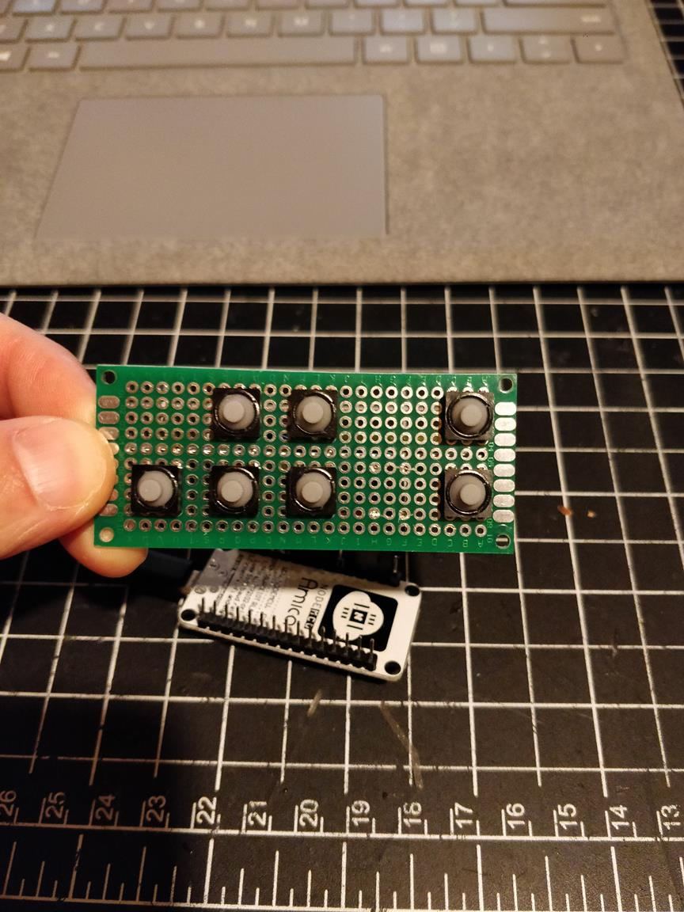
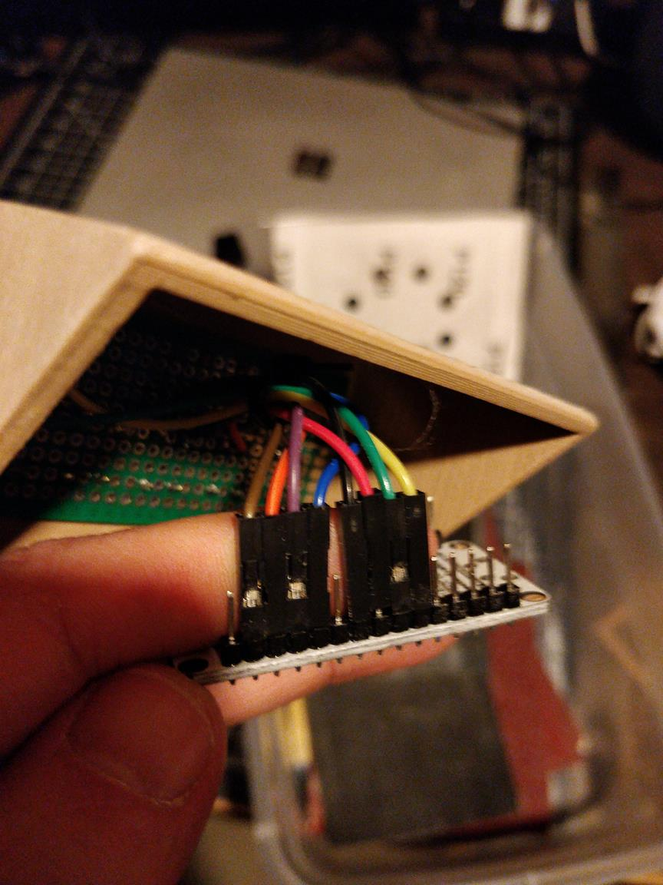
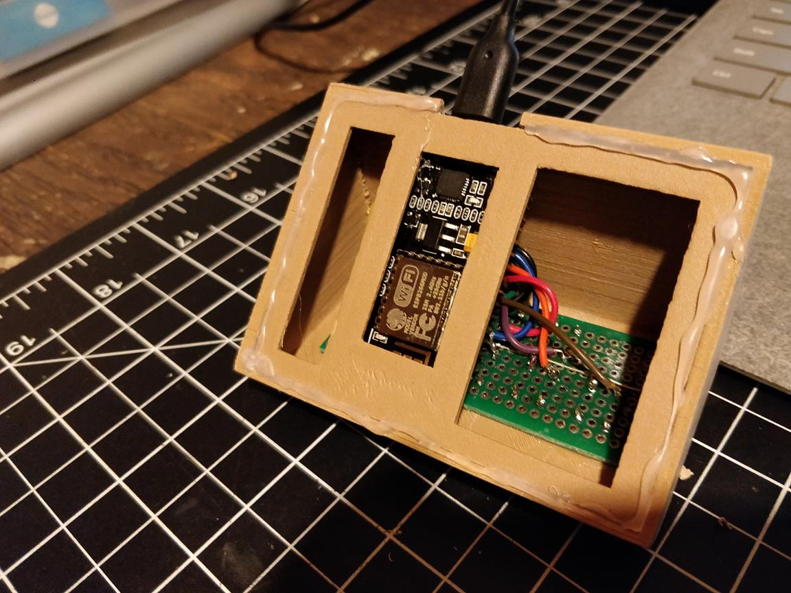
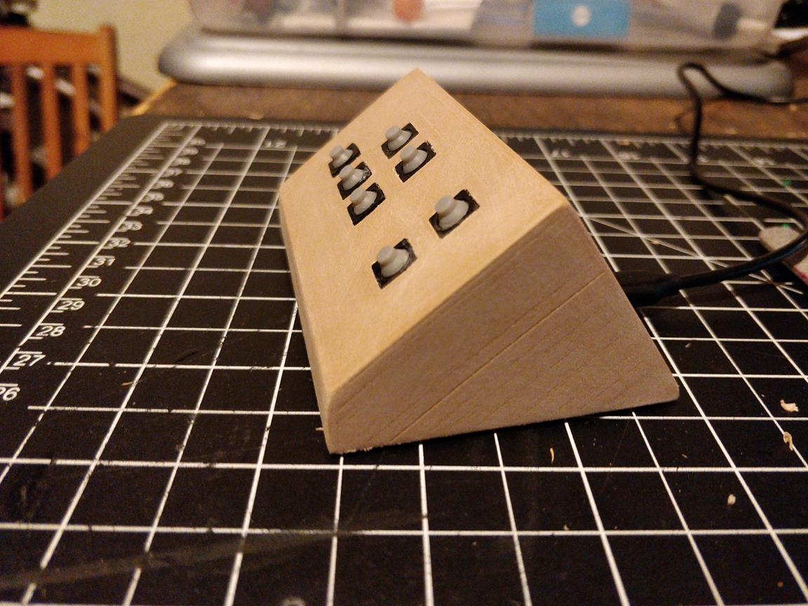
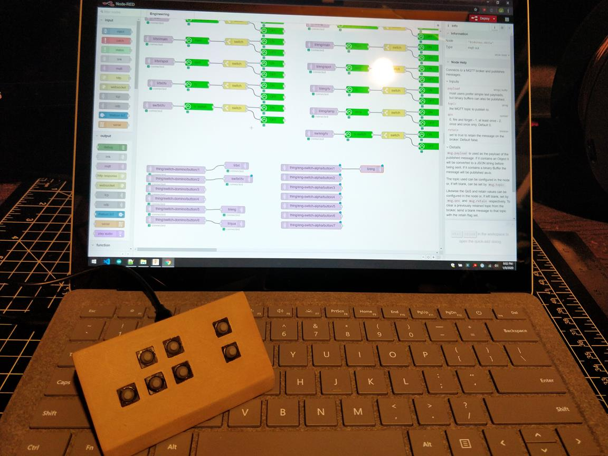

Smart switch 2 is a 7 button wifi switch powered by a NodeMCU. It controls the lights and TV in the office. It is an evolution of Smart Switch 1 that adds an extra button and fixes the instability when pressing the buttons.
This time I used smaller rubber capped buttons that have a squishy, soft-touch feel. Instead of press fitting the buttons to the case I soldered them to some perf board:
The perf board was then hot glued to the top of the case:
Then I connected the NodeMCU, attached it to the base plate. The base had warped slightly and didn't press fit in to the top correctly, so I butchered the bottom with lots of hot glue:
This time I decided to leave the case raw after sanding:
MQTT messages are hooked up in Node-RED:
